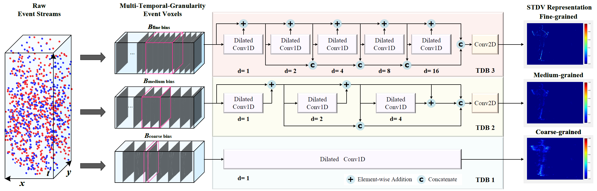
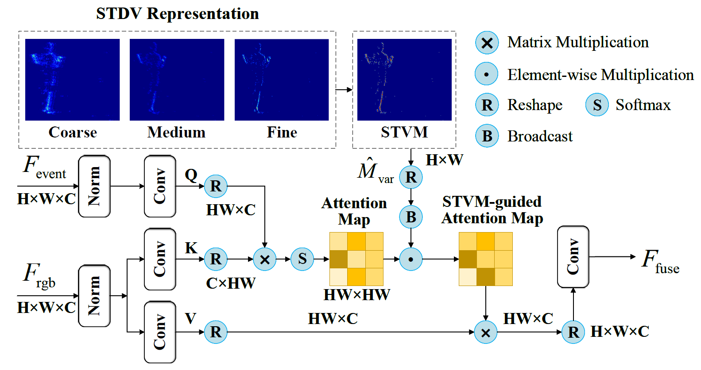
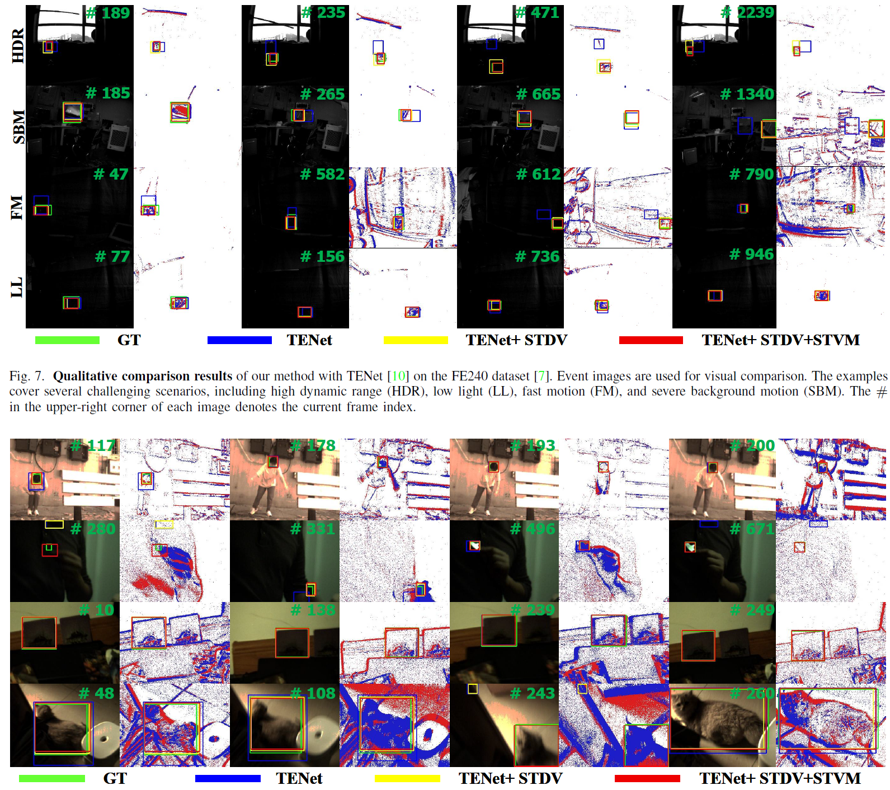

1Northwestern Polytechnical University Shaanxi Key Laboratory of Information Acquisition and Processing
✉ corresponding authors
Event-based object tracking has garnered significant attention due to its unique advantages in high-speed and high-dynamic-range scenarios. However, existing trackers often rely on hand-crafted event representations, which struggle to capture the complex spatio-temporal dynamics of moving objects. We propose the Spatio-Temporal Dynamic Voxel (STDV), a novel, multi-scale, and well-structured event representation jointly optimized with the tracking network. STDV discretizes asynchronous event streams into multi-level voxels with varying temporal resolutions. Cascaded temporal dilated convolutions progressively expand the receptive field to capture long-range temporal dependencies, while the representations from all levels are aggregated in a coarse-to-fine fashion. We further introduce Spatio-Temporal Variance Modeling (STVM), which captures event fluctuations across temporal scales to highlight motion-intensive regions. Experiments on RGB-event and event-only tracking benchmarks demonstrate consistent improvements and new state-of-the-art performance.

Hierarchical architecture of STDV. The event stream is represented at coarse, medium, and fine temporal granularities. Each branch employs a Temporal Dynamic Block with cascaded dilated convolutions to capture motion patterns at different temporal scales. The three outputs are concatenated into the final structured event representation.

STVM-guided attention. Variance across STDV's temporal granularities provides a motion-saliency prior that guides cross-modal attention toward dynamically active, target-relevant regions.
Our method reaches 64.0% SR / 94.6% PR on FE240, 68.9% SR / 81.8% PR / 80.7% NPR on COESOT, and 56.7% SR / 60.3% PR on EventVOT. It runs at 58.1 fps when integrated with TENet, retaining near-baseline inference speed.

Qualitative comparison on FE240 and COESOT. STDV produces clearer motion structures, while STVM improves localization under high dynamic range, low illumination, fast motion, and severe background motion.
@article{he2026stdv,
title={Learning Spatio-Temporal Dynamic Event Voxels for Robust Event-based Object Tracking},
author={He, Yuting and Fan, Bin and Ren, Zhongyang and Liu, Qi and Dai, Yuchao},
journal={IEEE Transactions on Circuits and Systems for Video Technology},
year={2026}
}